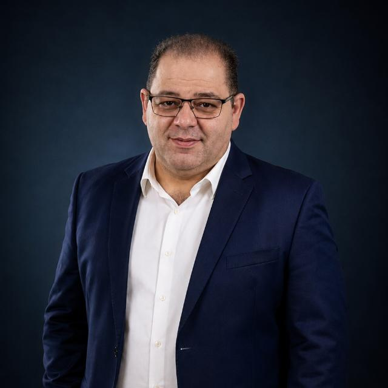

Minha inspiração

Uma das pessoas que mais me inspira na vida é meu pai. Para mim, ele não é apenas meu pai, mas também um grande amigo, conselheiro e uma das pessoas que mais me apoia. Sempre que preciso, ele está disposto a me ajudar, me orientar e me mostrar um caminho quando não sei qual decisão tomar.
Admiro muito a história de vida dele. Desde criança, ele precisou aprender a ter responsabilidades e amadurecer muito cedo. Durante grande parte da sua infância e juventude, ele e minha avó enfrentaram juntos as dificuldades da vida. Mesmo sendo jovem, ele começou a trabalhar cedo e sempre procurou ajudar nas despesas de casa.
Aos 13 anos, ele aceitou Jesus e, desde então, passou a dedicar parte de sua vida à obra de Deus, algo que considero muito importante na história dele. Além disso, construiu sua carreira profissional com muito esforço e dedicação. Atualmente, trabalha como gestor na área de Assistência Social, contribuindo com diferentes prefeituras e ajudando no desenvolvimento de projetos e ações voltados para a população.
O que mais admiro nele é a capacidade de continuar ajudando outras pessoas mesmo tendo passado por dificuldades em sua própria vida. Ele me ensina, principalmente através de suas atitudes, que devemos trabalhar, estudar, ajudar as pessoas e nunca desistir diante das dificuldades.
Tenho como objetivo, no futuro, honrar tudo o que meu pai fez por mim e pela nossa família. Quero construir uma vida da qual ele possa se orgulhar, conquistar uma boa estabilidade financeira e, principalmente, poder proporcionar a ele momentos e experiências que talvez ele não tenha tido a oportunidade de viver. Para mim, ter sucesso não significa apenas ganhar dinheiro, mas também poder retribuir todo o apoio, carinho e ensinamentos que recebi.
Frases que ele sempre diz
Relato pessoal do autor deste site"O não, nós já temos. Vamos atrás do sim."
— Meu pai
Relato pessoal do autor deste site"É melhor fazer e se arrepender de ter feito do que se arrepender de não ter feito."
— Meu pai
Essas frases me lembram de não ter medo de tentar. Muitas vezes podemos ter medo de errar ou de não conseguir, mas, se nunca tentarmos, nunca saberemos até onde poderíamos chegar.
Meu pai é uma das principais pessoas que me inspira a continuar estudando, trabalhando, enfrentando meus desafios e buscando meus objetivos. Espero um dia conseguir olhar para tudo que conquistei e saber que ele teve orgulho de fazer parte da minha caminhada.
orgulho no bom sentido da palavra — reconhecimento e carinho.